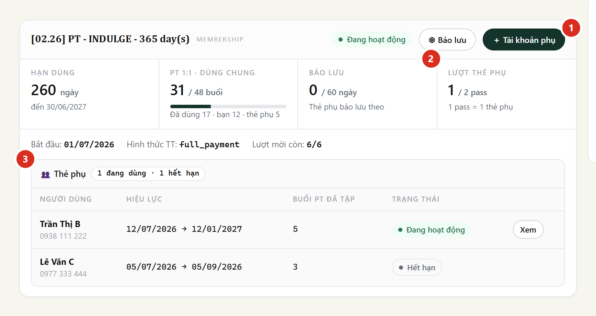
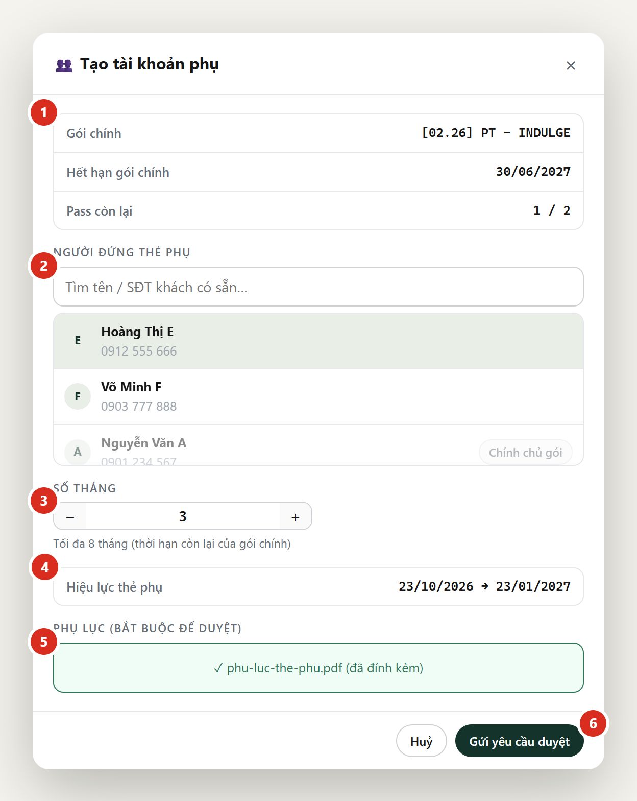
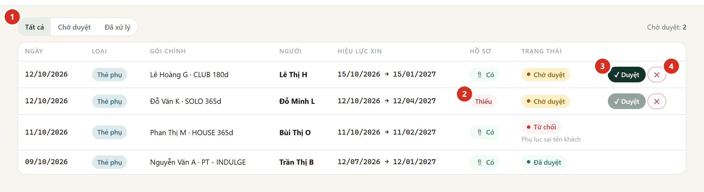
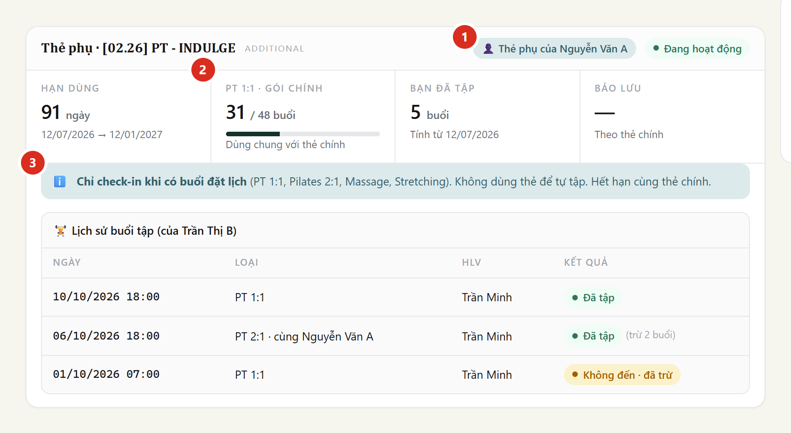
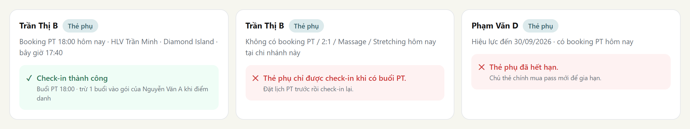

Thẻ phụ = gói riêng cho người khác, dùng chung số buổi và trạng thái của gói chính. 1 pass = 1 thẻ phụ. CS tạo yêu cầu, quản lý duyệt, quầy đặt lịch rồi check-in.
| Thẻ phụ | |
|---|---|
| Tạo khi | Gói chính active, còn pass |
| Hiệu lực | Từ ngày duyệt, tối đa = hạn còn lại của gói chính |
| Buổi được dùng | PT 1:1 · Pilates 2:1 · Massage · Stretching (trừ vào gói chính) |
| Check-in | Chỉ khi có buổi đặt hôm nay, đúng chi nhánh |
| Trạng thái | Luôn theo gói chính (bảo lưu, tạm ngưng, hết hạn) |
| Không được | Tự tập · bảo lưu riêng · sang tên · tự gia hạn |
Coach / Therapist không thao tác, chỉ thấy buổi của mình trên lịch.
Mở hồ sơ chủ thẻ chính (không phải người dùng thẻ phụ).


Gửi xong: yêu cầu Chờ duyệt, giữ 1 pass. CS huỷ được yêu cầu của mình tại Phê duyệt → Thẻ phụ.
Phê duyệt → tab Thẻ phụ. Không sửa được ngày / số tháng: sai thì từ chối.

Hồ sơ người dùng thẻ phụ sau khi duyệt:

Check-in qua khi có buổi đặt hôm nay, đúng chi nhánh, từ 30 phút trước tới hết buổi:

Bị từ chối → đặt lịch trước rồi check-in lại. Thẻ phụ hết hạn → mua pass mới, tạo yêu cầu mới.
Recovery và lớp nhóm không đặt được bằng thẻ phụ. Buổi 2:1 cũ nằm trên gói thẻ phụ mà cần dời / đổi khách → huỷ và đặt lại.
| App báo | Làm gì |
|---|---|
| Hết lượt tài khoản phụ | Mua thêm pass, hoặc huỷ yêu cầu chờ duyệt thừa |
| Gói chính phải đang hoạt động | Chờ gói chính active rồi tạo |
| Số tháng vượt thời hạn còn lại | Giảm số tháng |
| Khách đã là thẻ phụ / đang chờ duyệt | Chọn người khác hoặc chờ yêu cầu cũ |
| Thẻ phụ chỉ được check-in khi có buổi… | Đặt lịch; kiểm chi nhánh và giờ |
| Thẻ phụ chỉ dùng PT 1:1, Pilates 2:1, Massage, Stretching | Chọn đúng loại buổi |
| Buổi 2:1 không được có cả 2 khách là thẻ phụ | Đổi khách thứ 2 |
| Yêu cầu này đã được xử lý | Tải lại trang |
Ảnh minh hoạ lấy từ bản thiết kế UI, dữ liệu giả; giao diện thật có thể khác vài chi tiết.